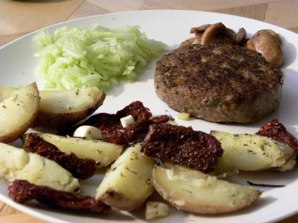
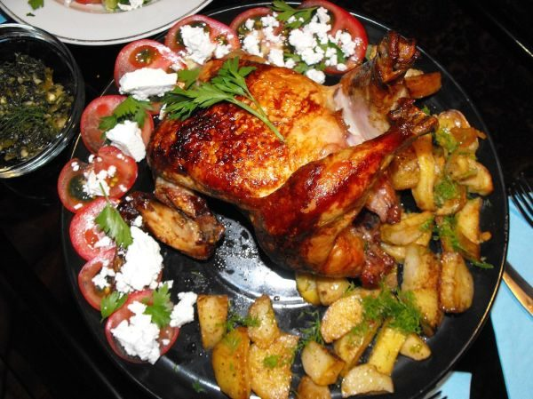

Portuguese Oven-Roasted Potatoes
Poppa kept 2 versions of this dish.
Follow any recipe, mix and match, or use for inspiration for your own version. That's how Poppa did it.
Oven Roasted Potatoes

Photo: roolrool (CC BY 2.0)
Quartered Idaho potatoes roasted in a seasoned, paprika-tinted water bath with onion, tomato, parsley, and chourico until they take on a red color. A Portuguese-style side.
Directions
- Skin and cut potatoes to size wanted, generally quartered. Preheat oven to 375 degrees. Pour water into roasting pan. Add vinegar to taste. The water should have just a hint of vinegary taste. Sprinkle paprika over water and mix, removing the lumps. Add salt, pepper, onion and tomato, parsley and potatoes. Before cooking add chourico. Bake 2 hours. Do not cover potatoes because they will steam and not roast. The potatoes will have a nice red color when they are done.
- Skin and cut the 4 Idaho potatoes to the size wanted, generally quartered.
- Preheat the oven to 375 degrees.
- Pour the 3 cups water into a roasting pan.
- Add the 1/2 tablespoon wine vinegar to taste; the water should have just a hint of vinegary taste.
- Sprinkle the 1/2 tablespoon paprika over the water and mix, removing the lumps.
- Add the 1 teaspoon salt, 1 tablespoon fresh ground pepper, the chopped onion, the chopped tomato, 3 tablespoons parsley, and the potatoes.
- Before cooking, add the piece of chourico.
- Bake for 2 hours. Do not cover the potatoes, because they will steam and not roast.
- The potatoes will have a nice red color when they are done.
Goes well with
Oven Roasted

Photo: Alesist (CC BY-SA 2.0)
Idaho potatoes oven-roasted in a seasoned, paprika-tinted water bath with onion, tomato, parsley, and chorizo, which gives the potatoes a nice red color. A Portuguese-style side.
Directions
- Preheat oven to 375 degrees. Pour water into a roasting pan. Add vinegar to taste. The water should have just a hint of vinegary taste. Sprinkle paprika over the water and mix, removing the lumps. Add salt, pepper, onion, tomato, parsley and potatoes. Before cooking add chorizo. Bake for 2 hours. Do not cover the potatoes because they will steam and not roast. The potatoes will have a nice red color when they are done
- Preheat the oven to 375 degrees.
- Pour the 3 cups water into a roasting pan.
- Add 1 or 2 tablespoons red wine vinegar to taste; the water should have just a hint of vinegary taste.
- Sprinkle 1 or 2 tablespoons paprika over the water and mix, removing the lumps.
- Add 1 teaspoon salt, 1 tablespoon ground pepper, the chopped onion, the chopped tomato, 3 tablespoons parsley, and the 4 Idaho potatoes.
- Before cooking, add the chorizo.
- Bake for 2 hours. Do not cover the potatoes, because they will steam and not roast.
- The potatoes will have a nice red color when they are done.
Goes well with
https://baron-3dl.github.io/normans-kitchen/recipe/oven-roasted-potatoes.html